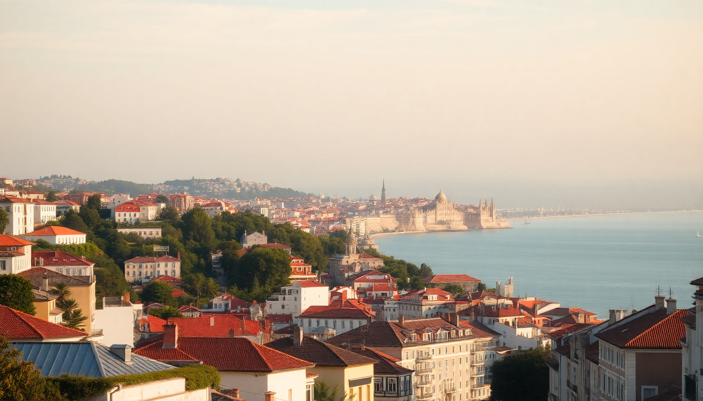

Where to Stay in Lisbon: Best Neighborhoods for Every Budget

We spent two weeks crisscrossing Lisbon’s seven hills, sleeping in five different neighborhoods to figure out where you should actually book. The city is compact, but the character changes block by block. Pick wrong, and you’ll spend your trip climbing stairs at midnight or stuck in a tourist scrum at Pastéis de Belém. Here’s the real breakdown, neighborhood by neighborhood, for every budget.
Where Should First-Timers Stay in Lisbon?
For your first trip, you want walkability without the chaos. Baixa and Chiado are the obvious sweet spots. Baixa is the flat grid of cobblestone streets below the castle—everything from Rossio Square to the waterfront. Chiado sits just uphill, with better cafes and fewer souvenir shops.
We booked a room at Hotel da Baixa (a converted 18th-century building) and could walk to the Time Out Market in seven minutes. The downside? Baixa gets loud until midnight, especially on weekends. If you want quieter, stay on the Chiado side near Largo do Carmo—the ruins and the convent garden give it a calmer vibe.
- Best for walkability: Baixa (flat, central, metro at Rossio)
- Best for cafes and bookshops: Chiado (Livraria Bertrand, A Brasileira)
- Watch out for: Street noise in Baixa after 10 PM; pack earplugs
What’s the Best Neighborhood for Nightlife?
If you came for the party, skip the tourist traps and head straight to Bairro Alto or Cais do Sodré. Bairro Alto turns into a block party after dark—narrow streets packed with people drinking Super Bock on the curb. It’s grungy, loud, and fun for exactly one night. We stayed at The Independente hostel (private rooms available) on the edge of Bairro Alto and loved being able to stumble home.
Cais do Sodré is the upgraded version—home to the famous Pink Street (Rua Nova do Carvalho) and clubs like Lux Frágil (if you can get past the bouncer). It’s less residential, so you won’t annoy locals, but hotel prices spike near the waterfront.
- Best for bar-hopping: Bairro Alto (Rua da Atalaia, Rua do Norte)
- Best for clubs: Cais do Sodré (Lux Frágil, Music Box)
- Budget tip: Stay in an Airbnb in Santos (five-minute walk south)—quieter, cheaper, still close to the action
Where Should Couples Stay for a Romantic Trip?
Skip the tourist-packed Alfama and go straight to Príncipe Real. It’s Lisbon’s garden district—tree-lined squares, upscale boutiques, and cocktail bars tucked into former palaces. We spent three nights at Memmo Príncipe Real (rooftop pool with a view of the São Jorge Castle) and it felt like a different city from the chaos of Baixa.
The neighborhood is pricier, but you get quiet streets, the Jardim do Príncipe Real (a botanical garden with a giant cedar tree), and dinner spots like Tasca da Esquina (Portuguese classics with a modern twist). Walk downhill to Chiado in ten minutes, or uphill to Bairro Alto in five.
- Best for romance: Príncipe Real (quiet, green, excellent food)
- Splurge hotel: Memmo Príncipe Real (rooftop, small rooms but great views)
- Mid-range option: The Lumiares Hotel (apartment-style, kitchenette, near the garden)
What’s the Best Budget Neighborhood That Isn’t a Hostel?
Campo de Ourique is the answer nobody gives you in the mainstream guides. It’s a residential neighborhood west of the city center, anchored by the Mercado de Campo de Ourique—a local food market that’s more authentic than Time Out and half the price. We rented an apartment near Igreja de Santo Condestável for €70/night and ate dinner at O Velho Eurico (grilled sardines, €12 a plate).
You’re a 20-minute walk from Baixa or a quick tram ride on the 28E (which gets packed, so walk or take a Bolt). The trade-off: fewer tourist attractions, but you get real Lisbon—neighbors hanging laundry, corner bakeries selling pastéis de nata for €1.20, and zero selfie sticks.
- Best for cheap eats: Mercado de Campo de Ourique (€5 lunch specials)
- Best for local vibe: Rua Coelho da Rocha (small shops, no chain stores)
- Transport: Tram 28E or walk 20 minutes to Cais do Sodré
Is Alfama Worth the Hype for First-Timers?
Alfama is beautiful and exhausting. The narrow, winding alleys are perfect for getting lost during the day—you’ll stumble on fado bars, laundry strung across balconies, and the Miradouro das Portas do Sol viewpoint. But it’s also a steep climb from the waterfront, and the 28E tram is always sardine-packed.
We stayed at Solar do Castelo (a converted 18th-century palace inside the castle walls) and loved the morning quiet. But by noon, the streets were wall-to-wall tourists following the same three Instagram spots. If you stay here, book a place near the Igreja de Santo Estêvão—it’s less crowded and still a two-minute walk to the viewpoints.
- Best for atmosphere: Alfama (fado, castle, views)
- Best for avoiding crowds: Stay near Santo Estêvão, not the castle entrance
- Warning: Lots of hills and stairs—not great for mobility issues
What About the Waterfront or the “New” Lisbon?
Alcântara and Parque das Nações are the modern options. Alcântara is the old industrial dock area, now filled with nightclubs and the LX Factory (a creative hub with shops, street art, and restaurants). We had a great burger at Landeau Chocolate (yes, chocolate cake as a meal) and spent an afternoon browsing the vintage stalls.
Parque das Nações is the Expo 98 site—wide boulevards, the Oceanário de Lisboa (one of the best aquariums in Europe), and the Vasco da Gama Tower. It feels sterile compared to the historic center, but it’s flat, modern, and has direct metro to the airport. Good for families or anyone who wants a quiet, clean base.
- Best for families: Parque das Nações (flat, metro, aquarium)
- Best for hipster vibes: Alcântara (LX Factory, rooftop bars)
- Best for business travelers: Parque das Nações (conference center, modern hotels)
Which Neighborhood Has the Best Food Scene?
Chiado and Príncipe Real are the foodie winners, but Belém deserves a mention for one dish. The original Pastéis de Belém bakery has been churning out custard tarts since 1837—go early (before 10 AM) to skip the line. The neighborhood itself is a 20-minute train ride from Cais do Sodré, with the Mosteiro dos Jerónimos and the Torre de Belém as the main draws.
For dinner, we loved Taberna da Rua das Flores in Chiado (no reservations, show up at 7 PM) and O Prego da Peixaria in Príncipe Real (the octopus prego sandwich is life-changing). In Belém, skip the tourist restaurants on the main square and walk two blocks to A Casa do Bacalhau for proper salted cod.
- Best for pastéis de nata: Pastéis de Belém (Rua de Belém, 84)
- Best for traditional Portuguese: Taberna da Rua das Flores (Chiado)
- Best for modern tapas: O Prego da Peixaria (Príncipe Real)
FAQ
Is Lisbon safe to walk around at night? Yes, overwhelmingly. We walked from Bairro Alto back to our hotel in Baixa at 1 AM without issue. Stick to main streets in Alfama and avoid the dark alleys near Santa Apolónia station after midnight. Pickpocketing is the main risk—keep your phone in your front pocket on the 28E tram and in crowded markets.
Which neighborhood is best for families with kids? Parque das Nações, hands down. Flat sidewalks, the Oceanário, and direct metro to the airport. The Myriad by Sana hotel has a rooftop pool and views of the Tagus. Avoid Alfama and Bairro Alto—too many stairs and late-night noise.
What’s the easiest way to get from the airport to my hotel? The metro runs directly from the airport to the city center (red line to Saldanha, then switch to green or blue). It’s €1.50 and takes 25 minutes. A Uber or Bolt costs €10-15 and drops you at your door. Avoid the prepaid taxi kiosks—they charge double.
Conclusion
- First-timers: Stay in Baixa or Chiado for walkability and central access.
- Couples: Príncipe Real for quiet romance and great restaurants.
- Budget travelers: Campo de Ourique for local prices and authentic food.
- Nightlife lovers: Bairro Alto or Cais do Sodré for party proximity.
- Families: Parque das Nações for flat streets and kid-friendly attractions.